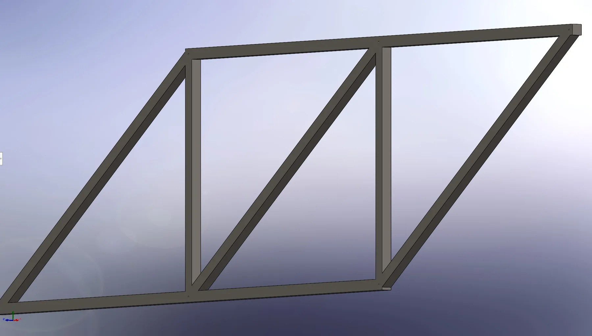

Case study · Sophomore Design
Planar Truss Design & Stress Analysis
A requirements-driven structural design project moving from concept sketches and statics calculations to member sizing, pin sizing, SolidWorks modeling, and failure-mode evaluation.

01 · Challenge
Turn limited parameters into a buildable structure.
The assignment provided two repeated 15 kN loads, horizontal spacing of 0.4 m, vertical spacing of 0.3 m, a pin support at A, and a roller support at B. The design needed identical member cross sections, identical pins, A500 structural steel, and a lightweight planar layout.
I generated several concepts before selecting and then simplifying the geometry. During analysis, I removed unnecessary zero-force members and restarted the calculations after finding sign and force-resolution errors. The final design was chosen for lower complexity, lower weight, and a clearer load path.
02 · Analysis
Calculate first. Model second.
Support reactions
Established the coordinate system and solved equilibrium using moments and force balances at the pin and roller supports.
Member forces
Applied the method of joints to classify each member in tension or compression and identify the critical load path.
Member sizing
Used a 315 MPa yield-strength value and a safety factor of 3.5 to calculate a required cross-sectional area, then selected a consistent 13.6 mm member width for the model.
Pin sizing
Evaluated a single-shear connection and calculated a 1.70 mm pin diameter, using identical pin geometry at each joint.
03 · Iteration
Mistakes changed the design process.
An early missing negative sign propagated through the joint calculations and produced an unrealistic member force. I stopped, backtracked, and restarted rather than forcing the result. A later unit/dimension error in SolidWorks over-constrained and deformed the sketch, requiring the model to be rebuilt.
The main engineering lesson was procedural: validate reactions before continuing, isolate dimensions with centerlines and symmetry, verify units before sketching, and check critical results at intermediate steps. The final geometry was simpler and more reliable because of those corrections.
04 · Visual record
From concept sketches to final CAD.
Select an image to enlarge it.
05 · Failure analysis
Predict how the design would fail.
The critical member CG carried the largest compressive force, making buckling or yielding the most likely first member-level failure. At the joints, the single-shear pins were evaluated for shear deformation or fracture. A pin failure could release connected members and create progressive loss of stability.
The project reinforced that successful sizing is not only about a final stress number. Load path, compression stability, joint behavior, material properties, and safety factors all need to be considered together.
Complete original record
All assignment writing and every exported image.
The polished case study above is a concise engineering summary. The full original A2 page remains available with the complete writing, all 74 locally exported project images, calculations, references, and source links.
Project files
Models and documentation.
Native CAD formats may require SolidWorks or another compatible CAD application.
Continue through the portfolio.
See the mechatronics, computation, product-analysis, and additional design work.